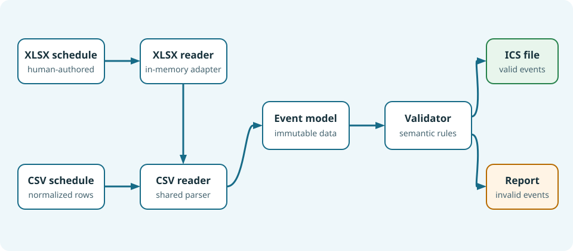

Application architecture¶
The application separates file decoding, event representation, validation, generation, and command-line coordination separate. Both input formats reach the same CSV parsing contract, so their behavior remains consistent.

The main responsibilities are:
The XLSX reader converts worksheet cells to normalized CSV text in memory.
The CSV reader parses rows into immutable
Eventobjects.The validator applies shared semantic rules and reports every issue.
The ICS generator creates one
VCALENDARwith oneVEVENTper event.The application selects the reader, skips invalid events, writes the output, and prints the report.
The model uses an inclusive end date for all-day events because that is natural
for human input. The generator adds one day when producing iCalendar’s
exclusive DTEND. Timed events use Europe/Rome timezone rules and are
converted to UTC, including daylight-saving changes.